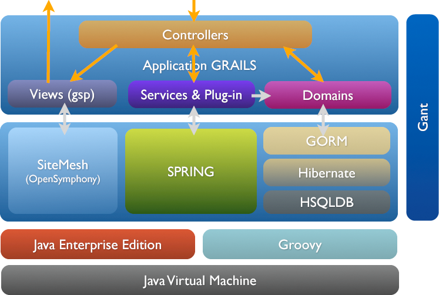
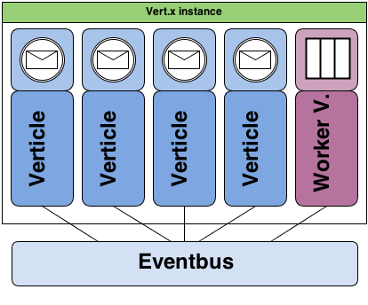

Groovy
vs
Java 8
Whoami
Vincent Van Steenbergen
Développeur indépendant

http://v-vansteen.github.io/groovy-vs-java8/
Twitter: @nsteenv


Petite question:
Qui a déjà utilisé Groovy?
Non vraiment?
Statistiques
3 millions de downloads en 2013

et pourtant...
Paradoxalement peu connu
it is nice and at the same time weird to see Java devs now enjoying benefits that #groovylang has provided since 10 years
— Dierk König (@mittie) 19 Mars 2014Quoi que...
@mittie it is nice and at the same time weird to see Groovy devs enjoying benefits that Lisp has provided since 1959... oh, wait. :)
— voiser (@voiser) 20 Mars 2014It's just Java!
Mais en mieux!
Langage dynamique, orienté objet
Compile en bytecode
S'exécute dans la JVM
Par exemple
On peut faire ça!
class Dog {
def bark() { println "woof!" }
def sit() { println "(sitting)" }
def jump() { println "boing!" }
}
def doAction( animal, action ) {
animal."$action"()
}
def rex = new Dog()
doAction( rex, "bark" )
doAction( rex, "jump" )
Où même ça:
def max(int i1, int i2) {
Math.max(i1, i2)
}
def numbers = [1, 2]
assert max( *numbers ) == 2
et ce n'est pas tout!
Closures
First Class Citizens
def myConst = 5
def incByConst = { num -> num + myConst }
println incByConst(10) // => 15
Variable implicite: it
def display = { println it }
display( "hello Bordeaux!" )
display "hello Bordeaux" // ça fonctionne aussi!
Implémentation
Interfaces fonctionnelles
Implémente par défaut la méthode call() de l'interface Callable
def closure = { "called" }
assert closure instanceof java.util.concurrent.Callable
assert closure() == "called"
Possibilités de transtyper une closure
public interface MyFunction { def apply(); }
def closure = { "applied" } as MyFunction
assert closure instanceof MyFunction
assert closure.apply() == "applied"
Fonctions d'Ordre Supérrrieur!
def list = ['a','b','c','d']
def newList = []
def upperCase = { it.toUpperCase() }
list.collect( newList, upperCase )
assert newList == ["A", "B", "C", "D"]
vous trouvez ça compliqué?
Collections
Listes
def list = [5, 6, 7, 8]
assert list[2] == 7
assert list instanceof java.util.List
assert [1, 2, 3].collect{ it * 2 } == [2, 4, 6]
assert [1, 2, 3].findAll{ it > 1 } == [2, 3]
Ranges
def range = 5..8
assert range[-1] == 8
assert range instanceof java.util.List
assert range.max() == 8
for (i in 1..10) {
println "Hello ${i}"
}
Collections
Maps
def map = [name:"Gromit", likes:"cheese", id:1234]
assert map["name"] == "Gromit"
assert map['id'] == 1234
assert map instanceof java.util.Map
map.each{
key, value -> print key
}
et beaucoup d'autres méthodes bien utiles...
contains, findIndexOf, grep, any, every, min, max, sum, flatten, intersect, disjoint, sort, join...
Sucre syntaxique
Elvis (?:)
def displayName = user.name ? user.name : "Anonymous"
def displayName = user.name ?: "Anonymous"
Safe navigation (?.)
def user = User.find( "admin" )
def streetName = user?.address?.street
Regular expressions
def cheese = ("cheesecheese" =~ /cheese/).replaceFirst("nice")
assert cheese == "nicecheese"
Performances
Forcément moins bonnes que Java
Mais pas tant que ça!
Beaucoup d'améliorations depuis Groovy 2
Optimisations
Flag InvokeDynamic (--indy) au niveau du compilateur
Annotation @CompileStatic
Fonctionne si l'on n'utilise pas de features
Benchmarks
Régle n°1: Ne pas se fier aux benchmark
Régle n°2: Ne pas se fier aux benchmark
Donc, un benchmark!
Fibonacci
Groovy
static int fibStaticTernary (int n) {
n >= 2 ? fibStaticTernary(n-1) + fibStaticTernary(n-2) : 1
}
static int fibStaticIf (int n) {
if(n >= 2) fibStaticIf(n-1) + fibStaticIf(n-2) else 1
}
int fibTernary (int n) {
n >= 2 ? fibTernary(n-1) + fibTernary(n-2) : 1
}
int fibIf (int n) {
if(n >= 2) fibIf(n-1) + fibIf(n-2) else 1
}
Résultats
| Sans @CompileStatic | Avec @CompileStatic | Java 8 | ||
| fibStaticTernary | 2098ms | 1405ms | 712ms | |
| fibStaticIf | 2480ms | 1400ms | 719ms | |
| fibTernary | 1986ms | 1320ms | 717ms | |
| fibIf | 2373ms | 1256ms | 769ms |
Bilan
Ne pas se fier aux benchmarks!
Permet d'améliorer un petit peu les performances
Utiliser Java si vraiment besoin de perfs
Enfin!

Lambdas
Java 8
List list = Arrays.asList(1,2,3,4);
list.forEach(n -> System.out.println(n));
Groovy
def list = [1, 2, 3, 4]
list.each { println it }
Collect
Java 8
List list = Arrays.asList(1,2,3,4);
List newList = list.stream()
.map((Integer n) -> n * 5)
.collect(Collectors.toList());
Groovy
def list = [1, 2, 3, 4]
def newList = list.collect { n -> n * 5 }
assert newList == [5, 10, 15, 20]
Sort
Java 8
List list = Arrays.asList(1,2,3,4);
list = list.stream().sorted().collect(Collectors.toList());
list = list.stream().sorted((Integer a, Integer b) ->
Integer.valueOf(a-b).compareTo(b))
.collect(Collectors.toList()
);
list = list.stream().sorted((Integer a, Integer b) ->
b.compareTo(a)).collect(Collectors.toList()
);
Groovy
def list = [2, 3, 4, 1]
assert list.sort() == [1, 2, 3, 4]
assert list.sort { a, b -> a-b <=> b } == [1, 4, 3, 2]
assert list.reverse() == [2, 3, 4, 1]
Références de méthodes
Java 8 (::)
List list = Arrays.asList(1,2,3,4);
strings = strings.stream()
.map(Helpers::modifier)
.collect(Collectors.toList());
Groovy (&)
def modifier(String item) { "new_${item}" }
def list = [1, 2]
assert list.collect(this.&modifier) == ['new_1', 'new_2']
Bilan
Syntaxe et concepts trés proches!
Groovy =~ Java 8
Java 8 reste plus perfomant
Roadmap Groovy
Actuellement en version 2.2
Version 2.3 RC en avril!
Compatible Java 8
Version 3 prévue pour fin 2014
Groovy 3
Grammaire basée sur Antlr v4
Support complet de Java 8
Protocole Meta-Objet dédié
(amélioration des performances avec InvokeDynamic)
Aujourd'hui
Quel est l'intérêt d'utiliser Groovy?
La syntaxe sympa, d'accord!
Mais encore?
Scripts
En ligne de commande (Python, Bash)
Ex: lancer un serveur Jetty
@Grab('org.mortbay.jetty:jetty-embedded:6.1.26')
import org.mortbay.jetty.Server
import org.mortbay.jetty.servlet.Context
import org.mortbay.jetty.servlet.DefaultServlet
new Server(8080).with {
new Context(it, '/', Context.SESSIONS).with {
resourceBase = '.'
addServlet(DefaultServlet, '/*').with {
setInitParameter 'dirAllowed', 'true'
}
}
start()
join()
}
Appelé depuis une application Java
ClassLoader parent = getClass().getClassLoader();
GroovyClassLoader loader = new GroovyClassLoader(parent);
Class groovyClass = loader.parseClass(
new File("src/test/groovy/script/HelloWorld.groovy")
);
GroovyObject groovyObject = (GroovyObject) groovyClass.newInstance();
Object[] args = {};
groovyObject.invokeMethod("run", args);
Exemple
Jenkins

Groovy Plugin & Script Console
DSL
Domain Specific Languages
Modéliser une logique métier à l'aide un mini-langage
Syntaxe proche du langage naturel
Exemple
Contraintes Grails
class Customer {
int age
String name
static constraints = {
age(size:18..65)
name(size:3..20, blank:false)
}
}
class Worker {
Object invokeMethod(String name, Object args) {
println “${name} method called.”
}
..
}
Validator
class Validator {
def subject
public void validate(def o) {
subject = o
o.constraints.setDelegate(this)
o.constraints.call()
println "Validation complete."
}
...
}
Validator
Object invokeMethod(String name, Object args) {
def val = subject.getProperty(name)
args[0].each {
switch(val?.class) {
case null: if (it.key =="blank" && !val)
println "failed: property '${name}' is null."
break
case Integer :
if (it.key == "size" && !(it.value.contains(val)))
println "failed: Integer property '${name}' has value '${val}' not in range '${it.value.inspect()}'."
break
...
Intérêt
Appliquer une logique sur des régles métiers
Ecosystème
GVM
Groovy enVironment Manager
Installer/désistaller et gérer les différentes versions
Groovy, Gradle, Grails, etc...
Gradle
Automatisation de build, test, déploiement
Combine Ant, Maven (ou Ivy) avec un DSL Groovy
Enormément de plugins disponibles
Facile d'étendre tâches/plugins
Exemple: Grog
Générateur de site statique basé sur Gradle
Spécification du contenu en Asciidoc
Moteur de templates Groovy
Spock
Tests basés sur des spécifications
class DataDriven extends Specification {
def "maximum of two numbers"() {
expect:
Math.max(a, b) == c
where:
a | b | c
3 | 5 | 5
7 | 0 | 7
0 | 0 | 0
}
}
Spock
Approche orientée BDD
class BehaviourDriven extends Specification {
def "I plus I should equal II"() {
given:
def calculator = new RomanCalculator()
when:
def result = calculator.add("I", "I")
then:
result == "II"
}
}
Geb
Automatisation du navigateur
(tests, screen scraping...)
Browser.drive {
go "http://myapp.com/login"
assert $("h1").text() == "Please Login"
$("form.login").with {
username = "admin"
password = "password"
login().click()
}
assert $("h1").text() == "Admin Section"
}
Geb + Spock
Spécification GebSpec
class FunctionalSpec extends GebSpec {
def "go to login"() {
when:
go "http://myapp.com/login"
then:
title == "Login Screen"
}
}
Grails
Framework web MVC full-stack
Convention over configuration
Don't repeat yourselft
Play Framework, Django, Ruby on Rails
Architecture

Modèle
class Customer {
String firstName, lastName
Date birthday
String gender
String maritalStatus
}
Vue
Customer name:
${cust.lastName}, ${cust.firstName}
Controlleur
class CustomerController {
def list() {
def list = Customer.list()
[list:list]
}
}
GORM
Grails Object Relational Mapping
def book = Book.findByTitle("Groovy in Action")
book
.addToAuthors(name:"Dierk Koenig")
.addToAuthors(name:"Guillaume LaForge")
.save()
Avantages
Développement rapide d'applications CRUD
Dispose d'énormément de plugins
Nécessite peu de configuration préalable
Inconvénients
Toute la stack Spring + Hibernate par défaut => lourd
Compliqué de s'éloigner de l'architecture de base
Peut vite devenir une usine a gaz
Vertx
Communication asynchrone
Bus d'événements
vertx.createHttpServer().requestHandler { req ->
def file = req.uri == "/" ? "index.html" : req.uri
req.response.sendFile "webroot/$file"
}.listen(8080)
Vertx
Basé sur des Verticles/Workers
Echangent des informations à travers un Bus

Vertx
Polyglotte
Groovy, Java, Javascript, Coffeescript, Ruby, Python
Ratpack
Framework web MVC léger
Basé sur Netty
@Grab("io.ratpack:ratpack-groovy:0.9.3")
import static ratpack.groovy.Groovy.*
ratpack {
handlers {
get {
render "Hello world!"
}
}
}
Et bien d'autres...
GroovyFX - JavaFX avec Groovy
GrooScript - Convertir du Groovy en JS
SimpleCI - Serveur d'intégration continue
Ressources
Credits
Merci à vous
Questions?
Oublis?
Précisions?
Just try it!